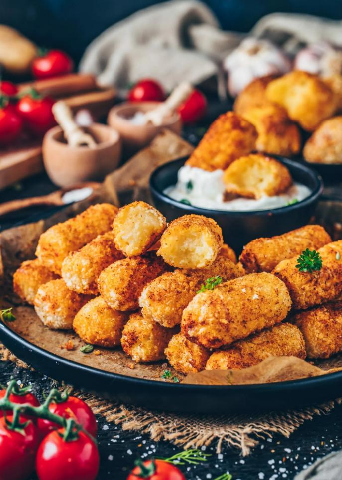

Friday: Potato Croquettes

Description
It is Friday, you probably need some food that gives you enough strength for the last hours, until you can finally knock off for this week.
Here come the Potato Croquettes: better than the simple french-fries from Tuesday and even more tasty, in our humble opinion.
Ingredients
- 750g potatoes
- 20g butter
- kummel
- salt & nutmeg
- flour
- eggs
- breadcrumb
- 2 egg yolks
Steps
- Wash the potatoes, peel, quarter and boil them with some salt and kummel.
- Squeeze them while they are still hot.
- Mix them with the egg yolks, butter, nutmeg and salt so that they make a smooth dough.
- As soon as possible, form thumb-thick rolls out of the dough and cut down thumb-thick pieces.
- Crumb the pieces first in flour, then in eggs and lastly in breadcrumbs.
- Roast them in well-heated fat. They are done when they are crispy-crunchy and their color is golden-brown.
- Bon appétit!
More recipes